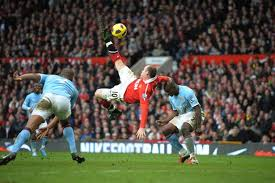

Soccer
I also have a keen interest in soccer and often play football with my friends when the weather is nice.
I also really enjoy watching Champions League matches. i support Manchester United and I try to watch their games when I'm not working or caught up with college work.